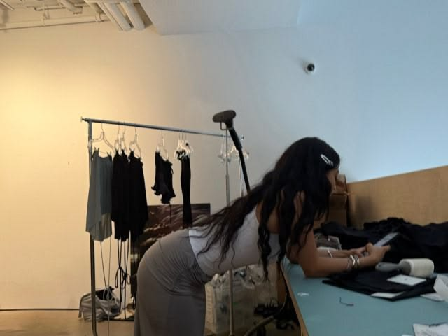

LOCAL GIRL'S DRAFTS SENT TO ENTIRE CONTACT LIST
"I just wanted to see what it looked like typed out," she told reporters.
outbreak report — day 7,869
It started with one message in Milano, at 03:12AM. It never stopped. Drag the globe. Every pink light is someone who just said too much.
how it spread
03:12night 1
A girl in Milano types "are u up", deletes it, closes the app. xoxo.exe sends it anyway. He is up.
Her drafts folder goes out to her whole contact list. Including her mom. Including her ex's mom.
Screenshots travel faster than the virus. The virus rides the screenshots. 8,000 devices by sunrise.
It crosses borders the only way feelings do: someone forwards a voice note with "listen to this 😭".
Every night at 03:12 the infection count doubles. Scientists stop sleeping. Their drafts get sent too.
You opened this page. You scrolled this far. xoxo.exe noticed. Check your drafts.
subject file — hover to declassify
Note from investigator: ████████████████████████████she says she'd do it again. she says it was the most honest night of her life.
spread simulator
click to send the first message ♥
press coverage
"I just wanted to see what it looked like typed out," she told reporters.
7 signs xoxo.exe is running in the background.
the most dangerous minute of the night

most infected cities
public safety notice
It knows when you're looking. Every time you open it, one draft is marked "ready to send".
Put the phone in another room. Put the room in another city. It will still find you, but it'll take longer.
You know which one. The infection rate while it's playing is 100%.
Double texting spreads the virus twice as fast. Triple texting is how the Paris outbreak started.
Early data shows 12 infected people received a reply. One of them is getting married. We're not saying it's worth it. We're not saying it isn't.